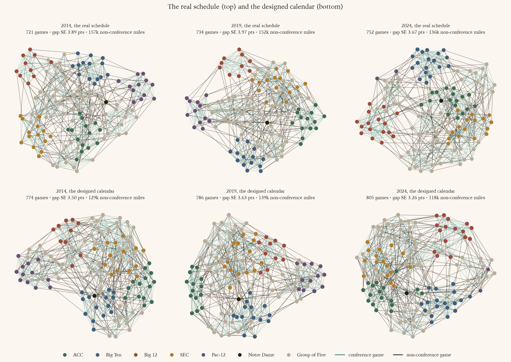

Every FBS program schedules its own non-conference games, for itself. What happens if the sport schedules them centrally, to learn as much as it can about how its conferences compare, and what does that cost the people who schedule today?
A rating system can only compare two teams through the games that connect them. Draw the season as a graph, teams as nodes and games as edges, and conference play fills in each league's own cluster densely while the non-conference games are the only bridges between clusters. Those bridges are the whole basis for any claim that the SEC is stronger than the Big 12, or that a 10–2 Group of Five champion belongs in the playoff over a 9–3 power team.
Today nobody is responsible for those bridges. A power program buys home games against weaker opponents; a Group of Five program sells them; an athletic director schedules for wins, gate receipts and travel budgets, which is a perfectly reasonable thing for an athletic director to do. The result is a graph that has become better stitched inside each tier since 2004 and more thinly connected across the power/Group of Five seam, which is the one division a selection committee most needs to see across.
The yardstick used here makes that precise. For a least-squares margin rating, the variance of its estimate of the gap between two conferences' average strengths depends only on the schedule graph. With the documented 16-point noise of a game margin, 16 times the square root of that variance is the standard error, in points, of what the schedule lets a rating say about conference A versus conference B. On the real schedule that number averages about four points over all conference pairs. It is the number a designed schedule has to shrink.
The matchups a school did not choose for connectivity's sake are left as they were: every conference pairing, every independent's slate, every protected rivalry (a pair that met in seven of the previous ten seasons) at its real week and real host. What the design takes is the dates and the remaining non-conference games. The calendar is reserved in three parts:
Each conference team gets twelve games minus its league games, never more than four of them in the design: a nine-game league plays two early games and the Swiss game, an eight-game league three and the Swiss game, and a seven-game league keeps an FCS opponent for its twelfth game. Otherwise the FCS buy game is gone, replaced by an FBS opponent, and the working assumption is that those programs are made whole for it, a cost this study does not price. Conference games may move so that the reserved weeks can be kept: a dating programme shifts them as little as it can (at most four weeks, except where a team can reach the early weeks no other way) under bye rules read off the real schedule's habits, no two byes within four weeks, none before week 3, and a penalty for idling in weeks 1–2 or on rivalry weekend, both of which a few teams a season cannot avoid.
A simulated-annealing search chooses the early games, scoring every candidate on the gap standard error plus four costs, each a ratio to the real schedule's: miles per game, how unevenly non-conference difficulty falls across the teams of a conference, a fan-interest proxy, and the power-versus-Group of Five gap. The weights were tuned by Bayesian optimisation on three seasons from 2015 to 2019 and applied to every season from 2004 to 2025; the seasons after 2020, and 2025 itself, were never used to choose anything. Hosts are assigned so that every team hosts half of its new games.

The table reads across each season. The gap standard error is the mean over all conference pairs; the tier gap is power against Group of Five; miles are campus to campus over the whole non-conference slate; the difficulty spread is the average within-conference standard deviation of a team's summed opponent SP+, which measures how unevenly a league's members are loaded.
| 2014 actual | 2014 calendar | 2019 actual | 2019 calendar | 2024 actual | 2024 calendar | |
|---|---|---|---|---|---|---|
| cross-conference FBS games | 208 | 261 | 209 | 261 | 212 | 265 |
| gap standard error, mean over pairs (pts) | 3.89 | 3.34 | 3.97 | 3.45 | 3.67 | 3.19 |
| power-vs-G5 gap standard error (pts) | 1.56 | 1.31 | 1.61 | 1.32 | 1.66 | 1.31 |
| games between two top-25 teams | 6 | 13 | 6 | 15 | 9 | 15 |
| non-conference miles, total | 157k | 151k | 152k | 158k | 136k | 127k |
| heaviest single team's away miles | 7.2k | 5.4k | 4.1k | 4.0k | 6.7k | 5.3k |
| within-conference difficulty spread (SP+ pts) | 19.4 | 16.8 | 21.5 | 17.8 | 19.0 | 14.2 |
| power team hosts the cross-tier game | 75% | 51% | 79% | 56% | 76% | 52% |
And what the calendar itself costs. Every designed game has a week; the as-played version of this design, which had to fit its games into whatever free weeks the real calendar left, stranded a dozen games a season.
| season | Swiss week | Swiss games | SP+ gap, paired on final SP+ | miles each | conference games moved | weeks each | byes in wks 1–2 | rivalry-weekend byes | opponents off a bye, per team | relaxation |
|---|---|---|---|---|---|---|---|---|---|---|
| 2014 | 13 | 61 | 2.2 | 645 | 248 of 499 (50%) | 1.9 | 1 | 5 | 2.1 | none |
| 2019 | 13 | 60 | 2.3 | 556 | 243 of 515 (47%) | 1.7 | 0 | 1 | 2.0 | none |
| 2024 | 13 | 63 | 2.6 | 563 | 265 of 530 (50%) | 1.8 | 5 | 6 | 2.1 | none |
| ACC | Big 12 | Big Ten | SEC | American | C-USA | MAC | MWC | Sun Belt | |
|---|---|---|---|---|---|---|---|---|---|
| ACC | 69 | 5 | 5 | 11 | 3 | 4 | 4 | 4 | 7 |
| Big 12 | 5 | 75 | 4 | 4 | 4 | 1 | 1 | 8 | 2 |
| Big Ten | 5 | 4 | 82 | 4 | 2 | 2 | 9 | 6 | 3 |
| SEC | 11 | 4 | 4 | 65 | 5 | 5 | 7 | 2 | 7 |
| American | 3 | 4 | 2 | 5 | 58 | 6 | · | 4 | 11 |
| C-USA | 4 | 1 | 2 | 5 | 6 | 41 | 3 | 5 | 4 |
| MAC | 4 | 1 | 9 | 7 | · | 3 | 49 | 1 | 4 |
| MWC | 4 | 8 | 6 | 2 | 4 | 5 | 1 | 43 | 3 |
| Sun Belt | 7 | 2 | 3 | 7 | 11 | 4 | 4 | 3 | 57 |
| ACC | Big 12 | Big Ten | SEC | American | C-USA | MAC | MWC | Sun Belt | |
|---|---|---|---|---|---|---|---|---|---|
| ACC | 69 | 3 | 5 | 10 | 10 | 6 | 8 | 4 | 12 |
| Big 12 | 3 | 75 | 7 | 4 | 7 | 5 | 4 | 6 | 7 |
| Big Ten | 5 | 7 | 82 | 6 | 5 | 5 | 9 | 5 | 6 |
| SEC | 10 | 4 | 6 | 65 | 9 | 7 | 7 | 5 | 12 |
| American | 10 | 7 | 5 | 9 | 58 | 5 | 3 | 3 | 8 |
| C-USA | 6 | 5 | 5 | 7 | 5 | 41 | 3 | 4 | 4 |
| MAC | 8 | 4 | 9 | 7 | 3 | 3 | 49 | 3 | 3 |
| MWC | 4 | 6 | 5 | 5 | 3 | 4 | 3 | 43 | 3 |
| Sun Belt | 12 | 7 | 6 | 12 | 8 | 4 | 3 | 3 | 57 |
In 2024 the real schedule leaves 1 conference pair without a game and the calendar 0; the calendar adds 53 games between conferences.
It measures the sport better, and the whole gain comes from one weekend. The mean gap standard error falls by about half a point in every season and the power-versus-Group of Five standard error, the one the real schedule had been losing for twenty years, by a quarter. Simulating seasons from each schedule and recovering ratings the way a system would, with last season's SP+ as the prior and the real schedule keeping its FCS game as an observation against an opponent of known average strength, the calendar's error on conference gaps is lower than the real schedule's at the end of the seasons it was never tuned on: 2.8 against 3.0 points in 2021 to 2024, 2.2 against 2.3 in 2025, and the tier gap 1.5 against 1.9. The margin is modest, and it is honest: through week 12 the real schedule is as good or better, because an FCS game is an early observation too and the calendar's early cross-tier games are no better an instrument than the buy games they replace. The Swiss week is the difference: in one weekend the conference-gap error drops from 3.1 to 2.8 points, because fifty-eight games between teams the season has shown to be peers, across conference lines, land all at once. Pairing on noisy mid-season ratings turns out to beat pairing on the truth, since the noise sends more of those games across the power/Group of Five line.
It doubles the marquee games. The real schedule produces about seven games a season between two season-final top-25 teams outside conference play. The calendar produces twelve, nearly all of them in the Swiss week, and they are games nobody could have bought in advance because nobody knew in August who would be a peer in November.
It travels about as much as reality. Not less, as the version of this design that kept the real dates did: the Swiss games fly, about 640 miles each, a quarter of the slate's mileage for a twelfth of its games. The early games stay regional (a Big Ten team playing a Mid-American school a few hundred miles away is as informative an edge as a flight across the country, because a mismatch is as informative as a toss-up on the margin scale), and the single heaviest travel burden on any one team still falls.
It keeps the games people want. Rivalries are untouched by construction. The last week of the season is still rivalry weekend. The difficulty a league's members face is a little more even than today, not the sharp equalising the as-played design achieved: the tuned weights spent almost nothing on it once the Swiss week fixed the late game by rule.
The first is the price of an honest tier gap. When the power team hosts every cross-tier game, "the power team is better" and "the home team gets a few points" are the same regression direction and a rating cannot separate them; balanced hosting is what makes the design's tier advantage real rather than analytic. It also means roughly one home game in four across the non-conference slate given back to Group of Five programs that currently sell it. The second is the price of reserving a week in November for everyone at once: a conference's own schedule has to flex around it, and a handful of teams a season idle in week 1 or on rivalry weekend when their league's arithmetic leaves no other way.
Ohio State's real 2024 non-conference schedule was the modern power template: Akron, Western Michigan, Marshall, all at home, two of them Mid-American opponents ranked outside the top 100 by season-final SP+. Under the calendar it keeps two early games against the Group of Five, App State (home, week 2) and Eastern Michigan (home, week 3), because that is where the sport's missing information is, and then plays the Swiss week. On season-final ratings the Swiss opponent is Ole Miss (away, 529 miles). Paired in season across a hundred simulated seasons, the draw is an SEC opponent 96% of the time.
| week | opponent | conference | SP+ | rank | venue | miles |
|---|---|---|---|---|---|---|
| 1 | Akron | Mid-American | −17.9 | 123 | home | 0 |
| 2 | Western Michigan | Mid-American | −10.2 | 105 | home | 0 |
| 4 | Marshall | Sun Belt | 3.1 | 58 | home | 0 |
| week | opponent | conference | SP+ | rank | venue | miles |
|---|---|---|---|---|---|---|
| 2 | App State | Sun Belt | −8.1 | 100 | home | 0 |
| 3 | Eastern Michigan | Mid-American | −13.3 | 114 | home | 0 |
| 13 (Swiss week) | Ole Miss | SEC | 27.9 | 2 | away | 529 |
| opponent | conference | SP+ | share of seasons |
|---|---|---|---|
| Ole Miss | SEC | 27.9 | 40% |
| Alabama | SEC | 25.0 | 21% |
| Texas | SEC | 24.1 | 17% |
| Tennessee | SEC | 22.0 | 15% |
| Texas A&M | SEC | 17.0 | 3% |
5 of its 9 conference games change weeks so that week 13 is clear; the Big Ten finale stays on rivalry weekend. Every other team in the league flexes the same way, which is what the "conference games moved" column above counts.
The selected team's non-conference games are red, its Swiss-week game blue and those opponents named; its conference games are the solid teal edges and its league rivals the brighter crests. Faded teal edges are everyone else's conference games, faded grey their non-conference games. Hover any crest to see that team's games; click it to select it. Layouts are spring embeddings from the same seed, so a difference in shape is the schedule.
Why does a slate against the Group of Five improve how a league compares with the SEC? Because a team's games are information for everyone, not only for the two teams playing. Every cross-conference game is a bridge, and the precision of any conference comparison depends on how many bridges there are and how they are spread, through every path in the graph. A team's own games are a small part of that; what improves its row is the whole redesigned season around it. The standard error of the selected team's conference against each other conference, on the real schedule and the calendar:
| Big Ten against | ACC | SEC | Big 12 | American | Conf. USA | Mid-American | Mountain West | Sun Belt |
|---|---|---|---|---|---|---|---|---|
| actual, standard error (pts) | 3.35 | 3.44 | 3.88 | 3.69 | 3.89 | 3.50 | 3.52 | 3.59 |
| calendar, standard error (pts) | 2.94 | 2.95 | 3.18 | 3.07 | 3.28 | 3.06 | 3.31 | 3.04 |
Every pair improves, by 0.2 to 0.7 points, and Ohio State's own rating is pinned down more tightly too (its standard error falls from 5.0 to 4.9 points). The team gives up one home game and a week of certainty about its November, and the league it belongs to becomes something the rest of the sport can measure.
Data: CollegeFootballData games 2004–2025, season-final SP+, campus coordinates, closing spreads. Method: least-squares gap variance from the Laplacian pseudo-inverse; simulated annealing over 2-opt and 3-rotation moves for the early games; the Swiss week paired in season by nearest cross-conference peer within a band; conference games re-dated by integer programme under bye rules; hosts by integer programme; weights tuned by Gaussian-process expected improvement on 2015, 2017 and 2019; recovery simulated with 200 replicate seasons at 16 points of margin noise (60 for the in-season Swiss variant). Code in cfbgraph.schedule; the full record with every table is notebooks/schedule_optimizer.ipynb, section 7.